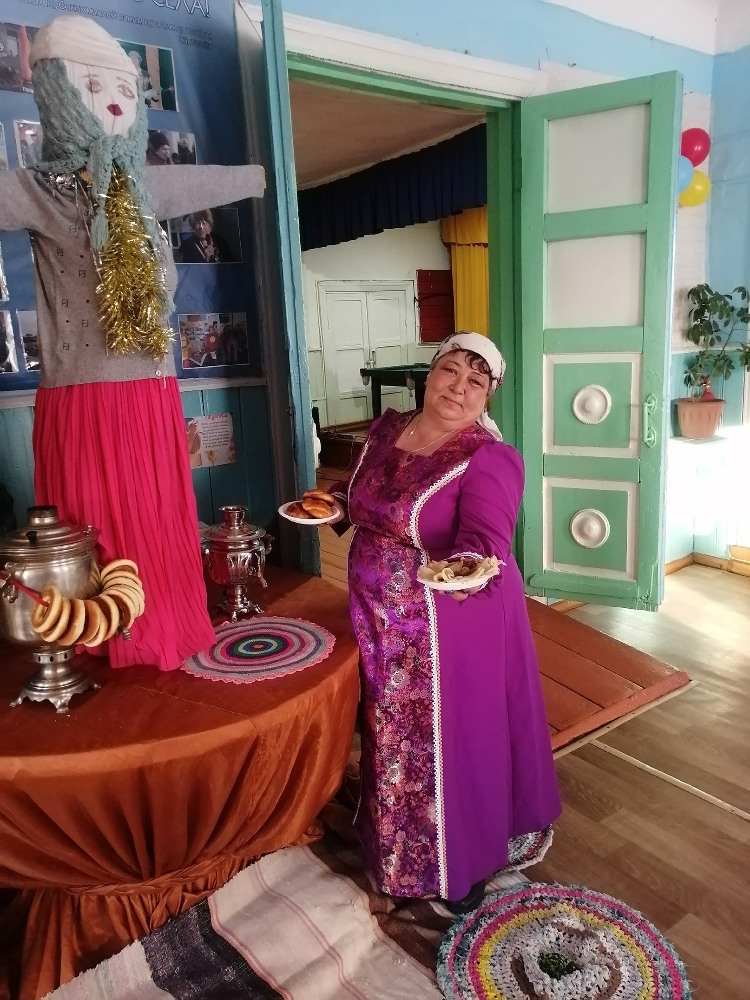
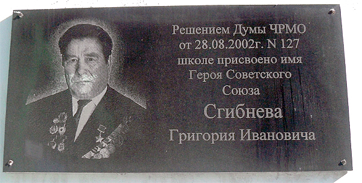

Дорогие друзья! Добро пожаловать на мой дипломный сайт муниципального бюджетного учреждения культуры Дом культуры сельского поселения «Поселок Нижняя Иреть».
💥⭐📢Дом культуры пос. Нижняя Иреть 🌾 Краткая история Сельского Дома Культуры! 🌾
В деревне Нижняя Иреть, стоял старый дом культуры, который был сердцем местной общины. Этот дом был построен еще в 1960-х годах, когда жители деревни решили объединить свои усилия для создания места, где можно было бы проводить праздники, собрания и культурные мероприятия. С годами дом культуры стал свидетелем множества событий. Здесь проходили ярмарки, концерты местных талантов и даже театральные постановки, в которых участвовали как взрослые, так и дети. Каждый год в конце лета в Нижней Ирете проводился фестиваль народного творчества, на который съезжались жители соседних деревень. Это было время, когда все собирались вместе, чтобы поделиться своими умениями, будь то танцы, песни или ремесла. Однажды, в один из таких фестивалей, в деревню приехала известная певица, которая когда-то родилась в Нижней Ирете. Она решила вернуться на родину, чтобы выступить на сцене своего детства. Это событие стало настоящим праздником для всей деревни. Люди собирались, чтобы вспомнить старые времена, делились историями и смеялись, а дом культуры наполнился музыкой и радостью. С тех пор дом культуры стал не только местом для мероприятий, но и символом единства и дружбы для жителей Нижней Иреть. Каждый год они собирались здесь, чтобы отмечать свои достижения, делиться радостями и поддерживать друг друга в трудные времена. Дом культуры стал настоящей душой деревни, местом, где каждый мог найти поддержку и вдохновение.

Дирекор дома культуры Стукалова Занаида Викторовна
Дорогая Стукалова Занаида Викторовна! От всего сердца поздравляем Вас с праздником и благодарим за Ваш вклад в развитие культуры и искусства! Желаем Вам новых творческих проектов, талантливых учеников и преданных зрителей. Пусть Ваш дом культуры процветает и продолжает радовать нас своими замечательными мероприятиями!

Сгибнев, Григорий Иванович
Григорий Сгибнев родился 7 января 1920 года в селе Нижняя Иреть (ныне — Черемховский район Иркутской области). После окончания семи классов школы и курсов механизаторов работал комбайнёром. В 1939 году Сгибнев был призван на службу в Рабоче-крестьянскую Красную Армию. С 1942 года — на фронтах Великой Отечественной войны. К июлю 1943 года гвардии сержант Григорий Сгибнев был помощником командира взвода 128-го гвардейского стрелкового полка (44-й гвардейской стрелковой дивизии, 6-го гвардейского стрелкового корпуса, 1-й гвардейской армии, Юго-Западного фронта). Отличился во время освобождения Харьковской области Украинской ССР. Во время боёв в районе города Изюм Сгибнев лично уничтожил 2 немецких солдат и, заняв часть немецкой траншеи, держал оборону до подхода основных сил(при этом был сильно ранен. Рука была повреждена взрывом гранаты, позже ампутирована). Указом Президиума Верховного Совета СССР от 26 октября 1943 года гвардии сержант Григорий Сгибнев был удостоен высокого звания Героя Советского Союза с вручением ордена Ленина и медали «Золотая Звезда». В 1947 году Сгибнев был демобилизован. Проживал и работал на родине. В 1961 году становится председателем сельского Совета . Скончался 8 апреля 1982 года. Был также награждён рядом медалей.